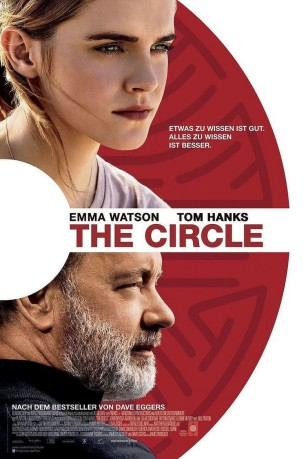
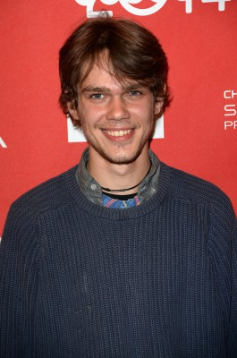
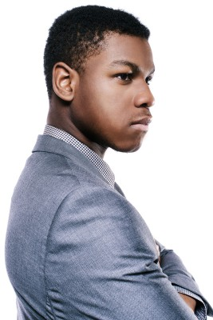
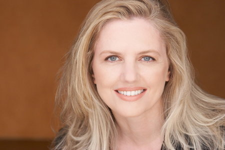

#8198 The Circle
 gesehen am 12.02.2018
gesehen am 12.02.2018
 
 IMDB-Wertung: 5.3 / 10
IMDB-Wertung: 5.3 / 10  Metascore: 43
Metascore: 43 
Die 24-jährige Mae Holland ist überglücklich. Sie hat einen Job in der angesagtesten Firma der Welt ergattert: beim „Circle“, einem Internetkonzern, der alle Kunden mit einer einzigen Internetidentität ausstattet, über die alles abgewickelt werden kann. Mit dem Wegfall der Anonymität im Netz – so das Ziel der „drei Weisen“, die den Konzern leiten – wird es keinen Schmutz mehr geben im Internet und auch keine Kriminalität. Mae stürzt sich voller Begeisterung in diese schöne neue Welt mit ihren lichtdurchfluteten Büros und High-Class-Restaurants, Gratis-Konzerten und coolen Partys. Sie wird zur Vorzeigemitarbeiterin und treibt den Wahn, alles müsse transparent sein, auf die Spitze. Doch eine Begegnung mit dem mysteriösen Kollegen Bailey ändert alles…
Jahr: 2017
Dauer: 109 Minuten
FSK: 12
Land: Vereinigte Arabische Emirate Studio: UFATonspuren: DTS - ,
Untertitel: Deutsch,
Auflösung: 1080p (1920x800) Größe: 7751 MB
Genre: Thriller, Drama, Sci-Fi
Regisseur: James Ponsoldt
Drehbuch: James Ponsoldt
Soundtrack: Danny Elfman
Darsteller:
 Emma Watson als Mae
Emma Watson als Mae-  Ellar Coltrane als Mercer
 Glenne Headly als Bonnie
Glenne Headly als Bonnie Bill Paxton als Vinnie
Bill Paxton als Vinnie Karen Gillan als Annie
Karen Gillan als Annie Tom Hanks als Bailey
Tom Hanks als Bailey- Beck als Beck
 Nate Corddry als Dan
Nate Corddry als Dan- Mamoudou Athie als Jared
- Michael Shuman als Beck Bandmate
-  John Boyega als Ty
- Regina Saldivar als Partier
- Amie McCarthy Winn als Marion
-  Eve Gordon als Senator Williamson
 Patton Oswalt als Stenton
Patton Oswalt als Stenton- Smith Cho als Gina
 Amir Talai als Matt
Amir Talai als Matt Poorna Jagannathan als Dr. Villalobos
Poorna Jagannathan als Dr. Villalobos- Judy Reyes als Congresswoman Santos
- Elvy Yost als Sabine
- Ellen Wong als Renata
- Steven Klein als Man from the Crowd
 Hunter Burke als EMT
Hunter Burke als EMT- Drew Droege als Improv Actor
- Andrew Hwang als Foreign Born Circler
- Mele Ihara als Foreign Born Circler
- Sandeep Parikh als Foreign Born Circler
- Adam Aseem Tiwari als Foreign Born Circler
- Jimmy Wong als Foreign Born Circler
- Lizzie Prestel als Advertising Circler
- Melanie Steinmann als Young Circler
- Ken Narasaki als Older Circler
- Lauren Baldwin als Gretchen
- Nicola Bertram als Fiona Highbridge
- Nick Peine als Person from the Crowd
- Alana Aimaq als Mercer Seeker
- Natalie Stephany Aguilar als Circler (uncredited)
- Reverend John Atom als Circler (uncredited)
- Kelli Barksdale als Young Woman (uncredited)
- Shaylin Broady als Circler (uncredited)
- Lori Crow als Circler (uncredited)
 Paul Edney als Laundry Worker (uncredited)
Paul Edney als Laundry Worker (uncredited)- Jenine Giusto als Circler (uncredited)
- Jedediah Jenk als Guppy (uncredited)
- Allyson Nicole Jones als Circler (uncredited)
 Punnavith Koy als Circler (uncredited)
Punnavith Koy als Circler (uncredited)- Abraham Lim als Circler (uncredited)
- Shandel Love als Circler (uncredited)
- Troy Murray als Tech Employee (uncredited)
- Henry Nolin als Circler (uncredited)
Datei: X:\2017(A-F)\Circle, The (2017, FSK12, 1920x800).mkv seit 07.02.2018
Festplatte: HD 2017(A-Z)-2018(A-F)
 Es gibt insgesamt 152 Filme in der Gruppe '2017(A-F)'
Es gibt insgesamt 152 Filme in der Gruppe '2017(A-F)'